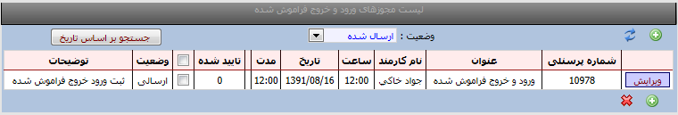
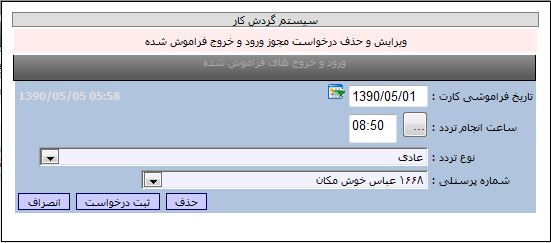

|
ورود و خروج فراموش شده
|
 
|
|
ورود و خروج فراموش شده
|
|
ورود و خروج فراموش شده
امکانات:
نمایش لیست درخواستهای ورود و خروج های فراموش شده
ثبت و ویرایش و حذف درخواستهای ورود و خروج های فراموش شده

روش ثبت یک درخواست :
ابتدا کلید جدید را می زنیم سپس مطابق تصویر تاریخ فراموشی کارت را وارد نموده و در قسمت ساعت انجام تردد ،ساعت را وارد نموده و سپس نوع ترددرا می توانید انتخاب نمایید عادی /مرخصی ساعتی /ماموریت ساعتی /... و با کلید ثبت درخواست، تایید می نمایید.
روش حذف یک درخواست:
پس از ثبت یک درخواست تا زمانیکه درخواست بوسیله مدیر تایید نشده باشد امکان حذف وجود دارد .
ابتدا گزینه لیست درخواستها را انتخاب سپس کلید ویرایش را زده و کلید حذف را می زنید تا درخواست از لیست حذف گردد.
کلید جستجو براساس تاریخ : با کلید جستجو براسا تاریخ می توانید درخواستها را براساس تاریخهاییی که وارد می نمایید مشاهده نمایید.
کلید وضعیت :بوسیله این کلید می توانید درخواستهای ارسال شده /رد شده /تایید شده و همه درخواستها را انتخاب نمایید.
